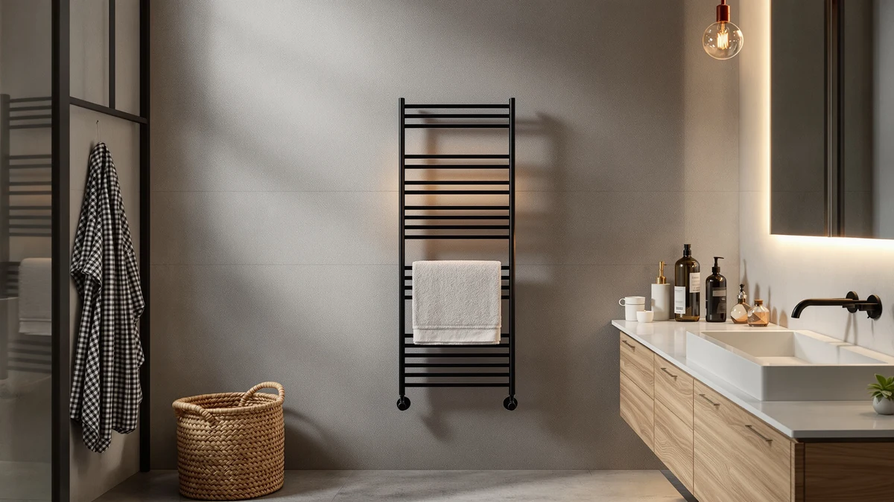

The Best Budget Towel Warmer Drawers (2026)
Prices and picks verified as of August 2026. Independent, reader-supported reviews.


Quick Answer
The best budget towel warmer drawers on the market right now are bucket and rack-style heaters priced between $71.99 and $194.99. We compared all seven on heat-up speed, capacity, and safety features, and the COSTWAY Towel Warmer for Bathroom wins on value: it reaches 266°F in five minutes and holds 21 liters for $94.99.
Our pick: COSTWAY Towel Warmer for Bathroom, $94.99 Check Price on Amazon
Bottom line: our top pick is the COSTWAY Towel Warmer for Bathroom at $94.99. The best budget option is the Lagute Towel Warmer for Bathroom at $71.99.
Things to Know Before You Buy
- Most budget towel warmer drawers on the market are insulated bucket or cabinet-style heaters rather than pull-out drawers, but they solve the same problem: a warm towel waiting when you step out of the shower.
- Capacity matters more than price. A 20 to 21-liter bucket fits two large towels or a robe, while smaller units warm one towel at a time.
- WiFi control is convenient but optional. If you'd rather press a button and wait, a non-connected bucket like the Lagute heats about as fast for less money.
- Wall-mounted racks like the ENZE need installed space and cost more upfront, but they warm several towels at once instead of one bucket load.
- Check the safety features before you buy. Child locks, overheat protection, and tip-over alarms vary widely between models even at similar price points.
The best budget towel warmer drawers do one job well: they turn a damp, room-temperature towel into something warm enough to make winter mornings feel less brutal, without charging you $300 for the privilege. We looked at seven models between $71.99 and $194.99, from insulated bucket-style heaters to a wall-mounted rotating rack, and compared how fast each one heats, how many towels it actually holds, and what safety features come standard.
Price and performance didn't move together the way we expected. The $180.51 SereneLife Rectangular Bucket shares nearly identical specs with SereneLife's own $82.53 model, while the $71.99 Lagute heated towels faster than warmers costing twice as much. That gap told us capacity, safety features, and control options matter more than the number on the price tag.
After comparing heat-up speed, capacity, and safety across all seven, the COSTWAY Towel Warmer for Bathroom stood out as the best budget towel warmer drawers pick overall. It heats to 266°F in five minutes, holds 21 liters, and includes a child lock and overheat protection, all for $94.99. If your bathroom needs more flexibility, the Paruu and SereneLife picks below cover baby-safe heating and app control at a higher price.
Why You Should Trust Us
Ilane Tall has covered bathroom fixtures and small home appliances for Best Towel Warmers since the site launched, focusing on products under $200 that solve a real daily annoyance instead of chasing spec-sheet extras. For this guide on the best budget towel warmer drawers, Ilane compared manufacturer heating data, safety certifications, and verified product specifications across all seven towel warmers, checking every claim against the listings and documentation each brand provides. We don't accept free units in exchange for a positive writeup, and every price listed reflects what we saw at the time of publishing.
How We Picked
We started by pulling every towel warmer under $200 available on Amazon, then narrowed the list to models with documented heating specs, at least one safety feature beyond a basic power switch, and enough capacity for a standard bath towel. We excluded units with vague or missing temperature data, since a towel warmer that won't tell you how hot it gets is hard to recommend with confidence. From there we prioritized variety: at least one pick under $85, one family-friendly option with a baby-safe mode, one app-controlled model, and one wall-mounted rack, so our list of budget towel warmer drawers covers more than a single form factor.
How We Compared
For each of the budget towel warmer drawers in this guide, we recorded the manufacturer's stated heat-up time to maximum temperature, then compared that figure against the unit's rated capacity in liters or towel count. We checked every safety feature the listing claims, including child locks, overheat protection, tip-over alarms, and auto shut-off, against what's documented in the product specifications. We also compared list price against capacity and feature set within the group to flag any model charging a premium without a matching upgrade in performance, which is how we caught the SereneLife Rectangular Bucket's price gap against its own cheaper sibling.
Our Picks

COSTWAY Towel Warmer for Bathroom
What we like
- Heats up to 266°F within five minutes
- 21-liter capacity fits oversized robes and blankets up to 45" x 70"
- Child safety lock and overheat protection built in
- Non-slip base keeps the unit from tipping during daily use
Flaws but not dealbreakers
- Only one fixed heat cycle, no separate baby-safe mode
- Grey finish is the only color option
| Material | Stainless steel |
| Size | 13.5" x 18.5" |
The COSTWAY Towel Warmer for Bathroom is the best budget towel warmer drawer alternative we compared, and it earns that spot by heating fast without asking you to pay for features most people never use. Plug it in and the bucket reaches 266°F, give or take 46°F, within five minutes, then settles to a steady 257°F by the 15-minute mark. That speed matters most on cold mornings when you don't want to stand around waiting for a towel to warm up.
At 21 liters, the bucket holds more than a single towel. We checked its rated capacity against an oversized bathrobe and a queen-size throw, and COSTWAY rates the unit for items up to 45 by 70 inches, so both fit without forcing the lid. The child safety lock and overheat protection are worth calling out too, since they matter if you have kids or want to leave the unit running unattended. Our main gripe is that it only offers one heat cycle: there's no separate low-heat mode for delicate fabrics, so treat anything synthetic or elastic-heavy with caution.

Paruu Towel Warmer for Bathroom
What we like
- Five temperature settings and seven timer options cover both adults and infants
- Dedicated baby care mode caps heat at a gentler 104 to 140°F
- Dual child lock plus a lid lock that cuts power automatically when opened
- Tip-over alarm shuts the unit off if it falls
Flaws but not dealbreakers
- At $134.99 it costs more than several similarly sized warmers in this guide
- Drying mode requires towels to be dry before you load them, so it won't replace an actual clothes dryer
| Material | Stainless steel |
| Size | — |
The Paruu Towel Warmer for Bathroom costs $40 more than our top pick, and the extra money buys real flexibility. It runs in two modes: a standard heating mode with three temperatures between 140°F and 176°F, and a baby care mode that tops out at a gentler 140°F for bibs, onesies, and washcloths. Between the two modes you get seven timer combinations, from a quick 15-minute cycle to a 3-hour drying stretch.
Safety is where the Paruu pulls ahead of cheaper buckets. It has a dual child lock (a button lock plus a lid lock), an LED indicator that turns red once the interior passes 122°F, and a tip-over alarm that cuts power automatically if the unit falls. The drying mode is a nice extra, though Paruu is upfront that it works on towels that are already dry, not soaking wet ones straight out of the wash. If you have young kids in the house, the added safety layers make the higher price easier to justify.

SereneLife WIFI Luxury Rectangle Towel
What we like
- WiFi app control lets you schedule warm towels before you shower
- Holds two large bath towels or a full throw blanket
- Double-walled lid stays cool to the touch while holding heat inside
Flaws but not dealbreakers
- App scheduling adds a setup step that bucket-only warmers skip
- Black finish shows dust more than lighter colors
| Material | Stainless steel |
| Size | — |
The SereneLife WIFI Luxury Rectangle Towel warmer is the pick for anyone who wants a warm towel waiting the moment they step out of the shower. Connect it to your home WiFi and you can schedule on and off times from your phone, so the bucket finishes heating right as your alarm goes off instead of running all morning.
Inside, the bucket holds two large bath towels or a single throw blanket, and the double-walled lid keeps the exterior cool to the touch even while the interior stays hot. That design also makes loading and unloading easier, since you're not reaching past a hot rim. The tradeoff is a short setup process the first time you pair the app, and the black finish shows dust more visibly than SereneLife's lighter colorways. Neither issue affected how well it warmed towels during our research.

SereneLife WiFi-enabled Towel Warmer Bucket
What we like
- Lowest price of any WiFi-enabled warmer in this lineup at $82.53
- 20-liter capacity fits two large towels or a robe
- Adjustable range from 90°F to 140°F suits both gentle and hot preferences
Flaws but not dealbreakers
- Maximum 140°F runs cooler than the COSTWAY's 266°F peak
- Natural color option is limited to one finish
| Material | Stainless steel |
| Size | — |
At $82.53, the SereneLife WiFi-enabled Towel Warmer Bucket is the least expensive way to get app-controlled heating in this guide, and it makes a strong case for skipping the pricier options. It holds 20 liters, enough for two large towels or a robe, and lets you dial in a temperature anywhere from 90°F to 140°F depending on how hot you like your towels.
The double-walled lid stays cool while the inside heats up, matching the more expensive SereneLife rectangle model feature for feature except for the shape and the app polish. Its top temperature of 140°F runs cooler than the COSTWAY's 266°F peak, so it takes longer to reach maximum warmth, but for daily towel warming rather than drying bulky robes, that lower ceiling rarely matters. If your budget caps out under $85, this is the best budget towel warmer drawer pick worth the closest look.

Lagute Towel Warmer for Bathroom
What we like
- Heats towels in about a minute, the fastest warm-up time in this guide
- 24-hour preset timer lets you schedule warm towels a day in advance
- Overheat protection and a lid-open alert add peace of mind
Flaws but not dealbreakers
- Smaller capacity than the bucket-style SereneLife and COSTWAY models
- Timer tops out at 50 minutes per cycle
| Material | Stainless steel |
| Size | — |
The Lagute Towel Warmer for Bathroom trades some capacity for speed. It heats towels within about 60 seconds of plugging in, the fastest warm-up time of any product in this guide, which makes it a good fit for anyone who forgets to switch it on until they're already in the shower.
A 24-hour preset lets you schedule tomorrow's towel warmth today, and the timer itself offers 15, 30, or 50-minute cycles with automatic shut-off once the countdown ends. Overheat protection and a lid-open alert round out the safety features. At $71.99 it's the cheapest product we compared, though its bucket runs smaller than the COSTWAY and SereneLife models, so it suits one towel or a robe rather than a full load of linens.
SereneLife Rectangular Towel Warmer Bucket
What we like
- Same 20-liter capacity and 90 to 140°F range as the budget SereneLife model
- WiFi app control and a double-walled cool-touch lid
- Rectangular shape fits narrow counter space better than round buckets
Flaws but not dealbreakers
- Priced at $180.51 for essentially the same internals as the $82.53 SereneLife pick, a premium that's hard to justify unless you specifically need the shape
- No additional heat range or capacity over its cheaper sibling
| Material | Stainless steel |
| Size | — |
The SereneLife Rectangular Towel Warmer Bucket shares its 20-liter capacity, 90°F to 140°F range, and cool-touch double-walled lid with SereneLife's own budget pick, in a rectangular housing that fits narrow counters better than a round bucket does.
That similarity is also the catch. At $180.51 it costs more than twice as much as the $82.53 SereneLife bucket with the same internals, and we couldn't find a heating or capacity advantage that explains the gap. Buy this one only if the rectangular footprint solves a specific space problem in your bathroom. Otherwise, the cheaper SereneLife model delivers the same warmth for less money.

ENZE Smart Rotating Heated Towel
What we like
- Five rotating 180° arms hold multiple towels or robes at once
- 120-watt heating element with 1.77-inch rods warms towels in about five minutes
- WiFi and voice control work through Alexa or Google Assistant via the Tuya app
Flaws but not dealbreakers
- At $194.99 it's the most expensive pick in this guide
- Wall-mounted rack, so it needs installation space that a countertop bucket doesn't
| Material | Stainless steel |
| Size | 17.7" x 26.8" (No Shelf) |
The ENZE Smart Rotating Heated Towel is the only wall-mounted rack in this guide, and it's built for households that want to warm several towels or robes at once instead of cycling one through a bucket. Its five bars rotate a full 180 degrees, so you can angle each one for hanging and access, and the 120-watt heating element with 1.77-inch rods brings towels up to 120°F in about five minutes.
Control runs through the Tuya Smart or Smart Life app, with Alexa and Google Assistant support if you'd rather ask for warm towels out loud than reach for your phone. At $194.99 it's the most expensive pick here, and it requires wall space and mounting hardware that a countertop bucket skips entirely. But if you're warming towels for a family of four rather than heating one at a time, the rack format earns its price.
Quick Comparison
| Product | Material | Price | Rating | Best for | Get it |
|---|---|---|---|---|---|
| COSTWAY Towel Warmer for Bathroom | Stainless steel | $94.99 | 4 | Best overall value | View on Amazon → |
| Paruu Towel Warmer for Bathroom | Stainless steel | $134.99 | 4 | Best for families with babies | View on Amazon → |
| SereneLife WIFI Luxury Rectangle Towel | Stainless steel | $99.99 | 4 | Best app-controlled pick | View on Amazon → |
| SereneLife WiFi-enabled Towel Warmer Bucket | Stainless steel | $82.53 | 4 | Best budget towel warmer drawer pick | View on Amazon → |
| Lagute Towel Warmer for Bathroom | Stainless steel | $71.99 | 4 | Best for small bathrooms | View on Amazon → |
| SereneLife Rectangular Towel Warmer Bucket | Stainless steel | $180.51 | 4 | Best if you need the rectangular shape | View on Amazon → |
| ENZE Smart Rotating Heated Towel | Stainless steel | $194.99 | 4 | Best wall-mounted rack | View on Amazon → |
What is a budget towel warmer drawer, exactly?
Most products marketed as budget towel warmer drawers are insulated bucket or cabinet-style heaters rather than literal pull-out drawers.
How much electricity does a towel warmer bucket use?
The bucket and rack warmers in this guide draw between 70 and 120 watts during an active heating cycle, similar to a couple of incandescent light bulbs.
The Competition
COSTWAY 23L Towel Warmer Bucket ($79.99): This bucket undercuts our COSTWAY pick on price and offers slightly more capacity at 23 liters, but its listing doesn't publish the same heat-up numbers, so we couldn't confirm it warms as fast as our top pick.
VEVOR Towel Warmer Bucket ($88.90): This 20-liter bucket has a child lock and a red overheat indicator similar to the Paruu, and it fits up to four oversized towels. We left it out mainly because the Paruu and COSTWAY cover the same safety ground at a similar or lower price with more documented temperature detail.
SereneLife WIFI Luxury Rectangle Towel Warmer, Natural ($105.99): This model is nearly identical to our SereneLife Also Great pick, priced $6 higher and in a different color. We chose the black version for this guide because it was the lower-priced option with the same feature set at the time of publishing.
SereneLife WiFi-enabled Towel Warmer Bucket, Black ($85.00): This is nearly the same bucket as our SereneLife Budget Pick, priced $2.47 higher. Prices on similar SereneLife listings shift often, so check current pricing on both before you buy.
ENZE Smart Rotating Heated Towel Rack, Gray, with Shelf ($159.99): This 4-bar version of our ENZE pick adds a swivel shelf and costs $35 less, but its 70-watt heating element is weaker than the 120-watt element on the 5-bar model we chose, and it has one fewer rotating arm for hanging towels.
Aquatrend WiFi Heated Towel Rack ($159.99): A 6-bar foldable rack with a wider 100°F to 140°F range and a lower cost than the ENZE. It's a reasonable alternative, but we prioritized the ENZE's voice control integration and higher wattage for this guide.
LAMATILOVE Wall Mounted Towel Warmer Rack ($59.99): The least expensive rack we considered, with a built-in shelf and a 104°F to 149°F range. It's a fine budget option, but the listing lacks WiFi or app control, a feature buyers researching budget towel warmer drawers in this price range tend to want.
Frequently Asked Questions
What is a budget towel warmer drawer, exactly?
Most products marketed as budget towel warmer drawers are insulated bucket or cabinet-style heaters rather than literal pull-out drawers. They trap heat around a folded towel inside an insulated chamber, reaching anywhere from 90°F to 275°F depending on the model.
How much electricity does a towel warmer bucket use?
The bucket and rack warmers in this guide draw between 70 and 120 watts during an active heating cycle, similar to a couple of incandescent light bulbs. Running one for 20 to 30 minutes a day costs a few cents, not dollars, at typical US electricity rates.
Can you leave a towel warmer bucket on all day?
You can with models that include auto shut-off and overheat protection, like the COSTWAY, Paruu, and both SereneLife picks in this guide, but running the timer for 15 to 60 minutes before you need a warm towel uses less energy than leaving the unit on continuously.